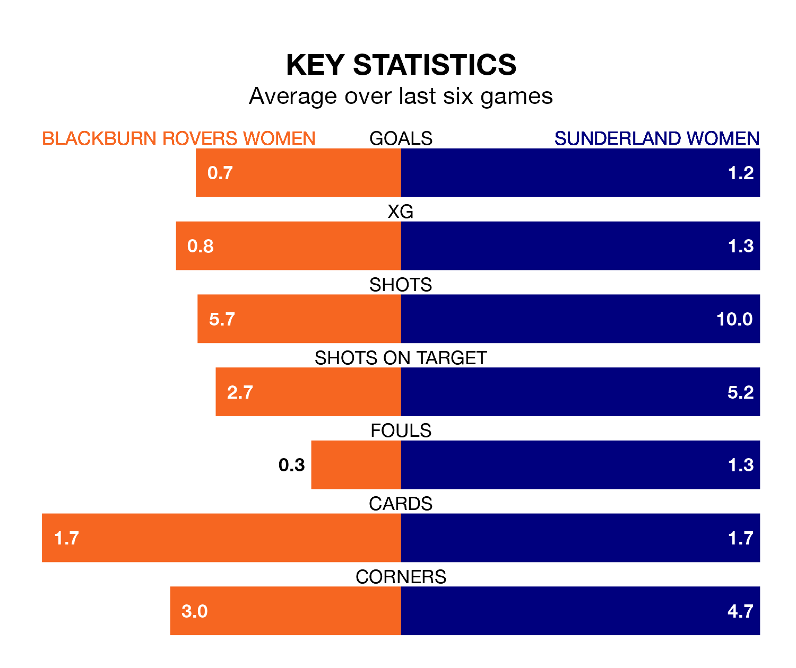

Blackburn Rovers Women are on a poor run ahead of hosting Sunderland Women at Lancashire FA County Ground on Saturday, with just three points collected from their last six games.
Blackburn Rovers have picked up just one win in their last six FA Women's Championship games, and face a Sunderland side whose last six games have brought three wins and one draw.
In Claudia Moan, Sunderland can rely on one of the league's safest pair of hands. She has kept six clean sheets in her 13 appearances this season, and no 'keeper has prevented the opposition scoring more often in the FA Women's Championship.
In Blackburn Rovers' net, Alexandra Brooks has four clean sheets in 11 games. She has conceded a goal every 66 minutes, more than twice as often as the 167 minutes between goals for Moan.
The away side are second in the table after 13 games, of which they have won seven and drawn four, earning 25 points.
The hosts are five places behind Sunderland in seventh, with five wins and six losses putting them on 15 points.
In the last 10 years, Blackburn Rovers and Sunderland have played each other on eight occasions. They won four each.
On average, Blackburn Rovers scored 0.8 goals and Sunderland 1.1 in those matches.
Their last meeting was on December 13, when Sunderland won 3-0 away.
With 10 goals in 11 games so far this season, Blackburn Rovers are the league's joint-third-lowest scorers with 0.9 goals per game. And they are conceding more than average, letting in 16 goals at a rate of 1.5 per game.
Sunderland are also below average scorers, with 1.2 goals per game, compared to a league average of 1.4. They have conceded 0.7 goals per game.
Blackburn Rovers' last match was on Sunday, a 3-2 loss against Charlton Athletic Women, with Jemima Dahou and Millie Chandarana getting the goals for Blackburn Rovers.
Sunderland beat Sheffield United Women 3-0 last time out, also on Sunday, with Emily Scarr (two) and Ellen Jones on the scoresheet.
Updated: 08:51 (UTC), 25/01/24